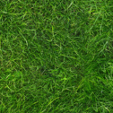
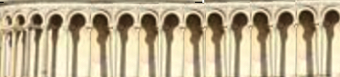
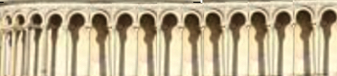
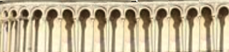

CSCI-610 Final: the leaning tower of pisa
Your browser does not support the HTML5 canvas element.
Controls
Press any key to draw the initial scene.
Press w,a,s,d to move the lightsource in, left, out, right.
Press r, f to move the lightsource up and down.
P.S. Vegetation and tower reflects light differently.

 
